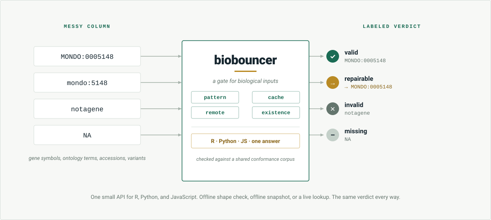

R and Python · one verdict
biobouncer
A gate for biological inputs. It checks IDs at the door.
One small API answers "is this a valid identifier?" for gene symbols, ontology terms, variant formats, and database accessions across 46 sources. R and Python return the same verdict for the same input, enforced by a shared conformance corpus.
Two doors
One bouncer, two doors
Same ID, same answer. Pick the language you work in.
The R package
Function reference, a getting-started vignette, and recipes, built with pkgdown.
install.packages("biobouncer",repos = "https://samuelbharti.r-universe.dev")
The Python package
Guide, examples, a sources cookbook, and API reference, built with MkDocs.
pip install biobouncerChecking modes
Three ways to check
One argument, how, decides how strict and how online the check is.
How it works
A column in, a verdict out
A messy column goes in; one labeled verdict comes out, identical in R and Python.
